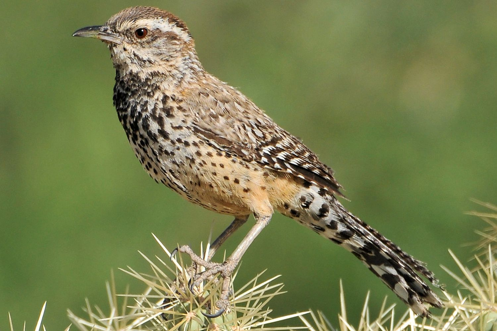

Campylorhynchus brunneicapillus
Cactus Wrens in the wild have been recorded living to be 7-10 years old. They are a large member of the wren family being 7-8 inches in length. They are the state bird of Arizona. The male is kept very busy during the breeding season.